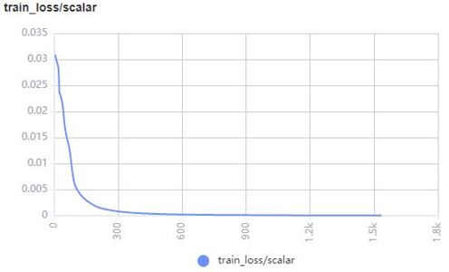
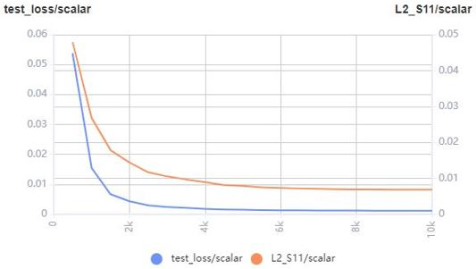
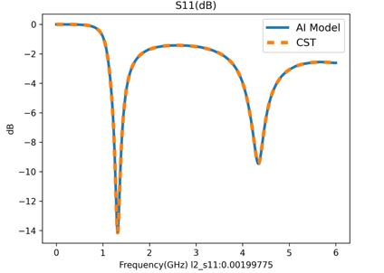
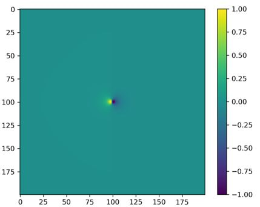
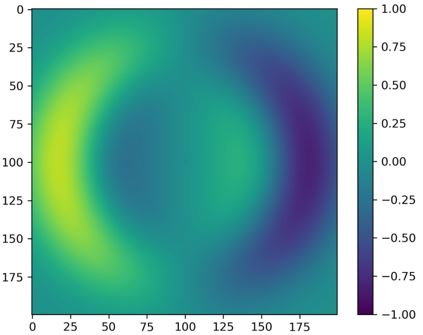
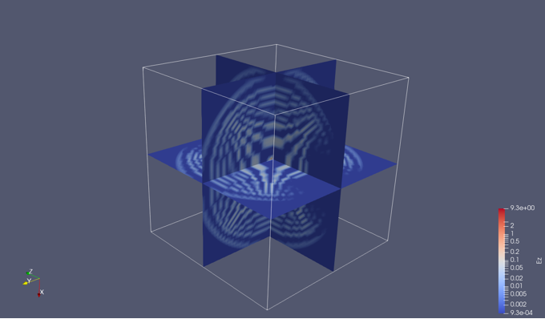

电磁仿真结果可视化

概述
电磁仿真结果通常包含仿真区域内的电磁场、S参数等物理量。仿真结果的可视化能够直观反映所关心物理量的大小和分布，辅助设计人员调试调优。MindSpore Elec提供了对训练/测试过程，以及仿真结果（电磁场、S参数）的可视化模块mindelec.vision，下面的案例将介绍如何通过mindelec.vision进行可视化。
训练/测试过程可视化
MindSpore Elec主要通过调用MindSpore Insight的接口可视化训练/测试过程中的各项指标和结果，可视化文件通过回调函数Callback函数生成，其中数据集和网络定义具体可参照参数化教程。
solver = Solver(network=model_net,
mode="Data",
optimizer=optim,
loss_fn=nn.MSELoss())
monitor_train = MonitorTrain(per_print_times=1,
summary_dir='./summary_dir_train')
monitor_eval = MonitorEval(summary_dir='./summary_dir_eval',
model=solver,
eval_ds=data["eval_loader"],
eval_interval=opt.print_interval,
draw_flag=True)
callbacks_train = [monitor_train, monitor_eval]
通过callbacks参数传入solver即可绘制训练过程中的loss曲线，以及测试集的相对误差曲线。
solver.model.train(epoch=opt.epochs,
train_dataset=data["train_loader"],
callbacks=callbacks_train,
dataset_sink_mode=True)
以下是通过该方法绘制的训练集的loss曲线示例：

以下是通过该方法绘制的测试集的loss曲线和相对误差曲线示例：

绘制随着训练的进行，测试集的S11预测结果

S11可视化
MindSpore Elec提供了plot_s11函数可视化S11曲线，该可视化工具调用代码如下：
s11_tensor = s11
path_image_save = './result'
legend = 's11'
dpi = 300
plot_s11(s11_tensor, path_image_save, legend, dpi)
可视化结果（MindSpore Elec和商业软件CST结果对比）

二维电磁场可视化
MindSpore Elec提供了plot_eh函数可视化电磁波的二维剖面，该可视化工具调用代码如下：
simu_res_tensor = result_eh
path_image_save = './result'
z_index = 5
dpi = 300
plot_eh(simu_res_tensor, path_image_save, z_index, dpi)
不同时刻的Ex二维可视化结果



Ex的连续动图如下：

三维结果可视化
MindSpore Elec 提供vtk_structure函数，用于生成三维电磁场的可视化文件，该软件可以通过ParaView读取展示三维效果。
运行以下代码为仿真结果生成每个时刻的三维可视化.vts文件。
grid_tensor = result_grid
eh_tensor = result_eh
path_res = './result_vtk'
vtk_structure(grid_path, eh_path, path_res)
其中grid_tensor为三维网格坐标文件，维度通常为：（t_dim, x_dim, y_dim, z_dim, 4），最后一轴存储网格点空间时间信息（x, y, z, t）。eh_tensor为生成的电磁场三维网格文件，维度通常为：（t_dim, x_dim, y_dim, z_dim, 6），最后一轴存储网格点电磁场值（Ex, Ey, Ez, Hx, Hy, Hz）。
不同时刻的Ez三维可视化结果


Ez的连续动图如下：